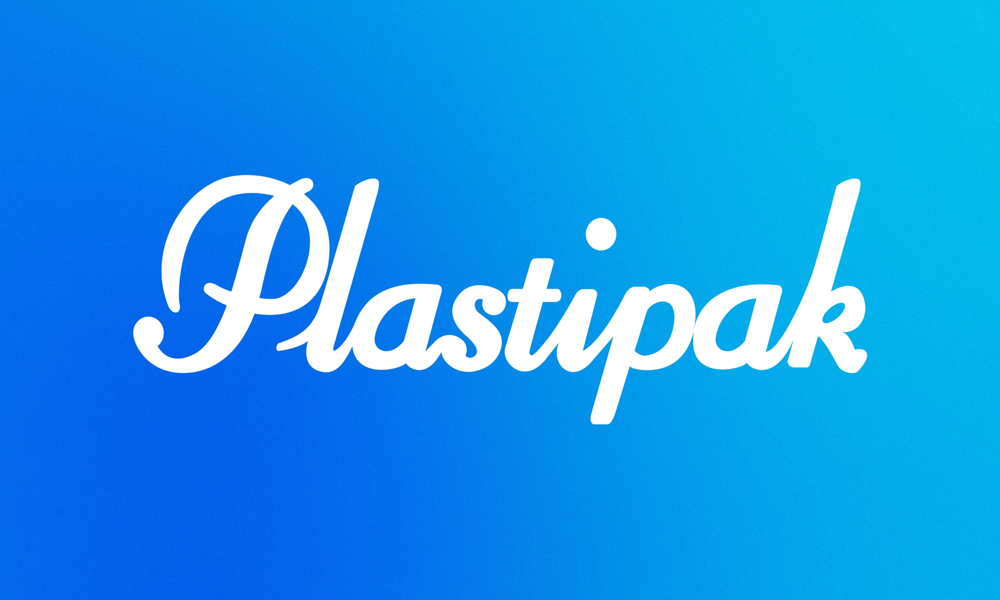
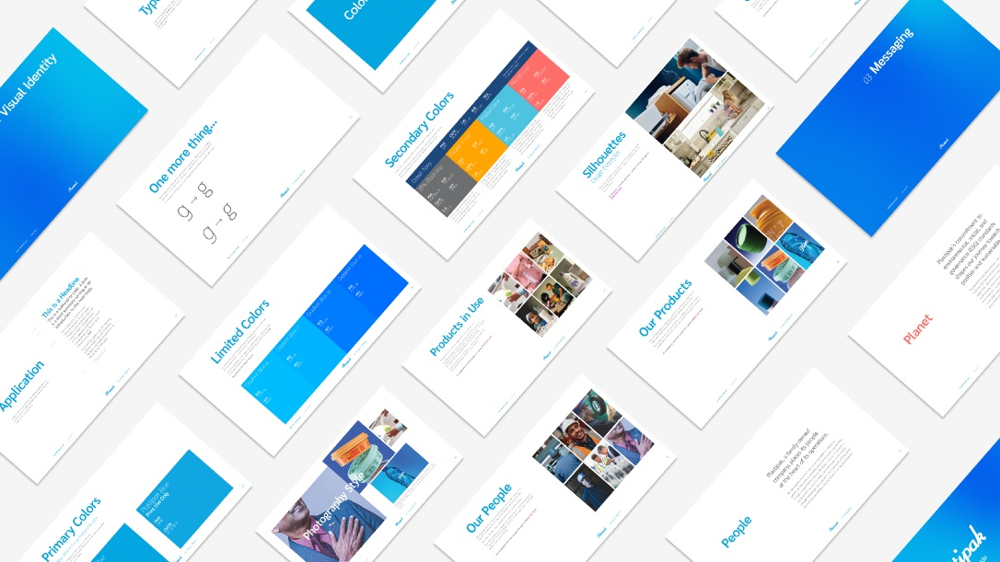
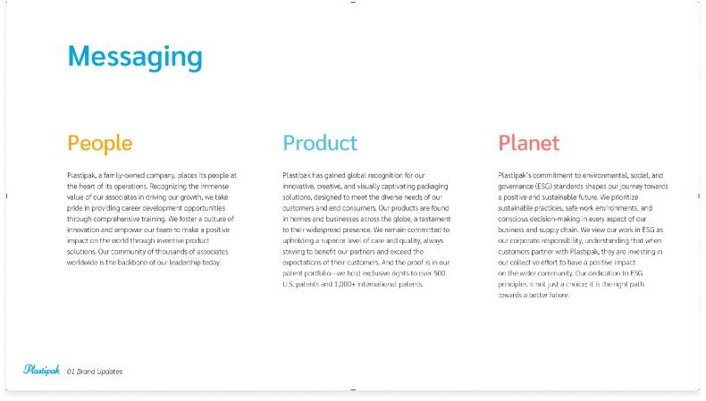
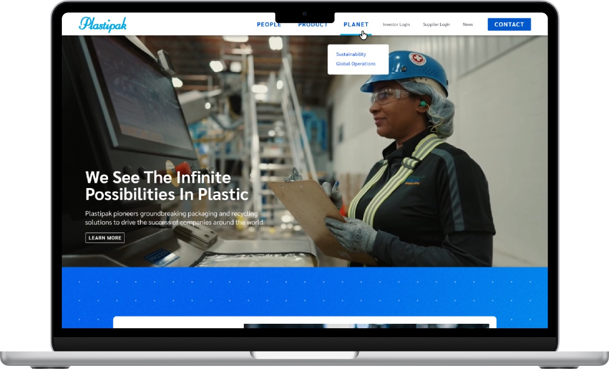
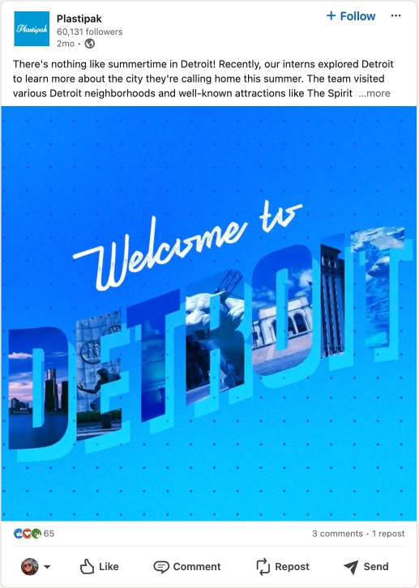

Plastipak

The Problem
Plastipak is one of the largest rigid plastics packaging manufacturers in the world. If you've picked up a bottle today, there's a reasonable chance they made it. But the brand positioned the company as a packaging manufacturer — functional, accurate, forgettable.
That mattered because Plastipak was competing for talent against tech companies and sustainability-driven brands that had figured out how to make their work sound meaningful.
The Rundown
- Creative direction
- Competitive audit
- Brand strategy and positioning
- Manifesto and messaging pillars
- Voice and messaging
- Website (Plastipak.com)
- Intranet and internal comms
- Family of companies strategy
- Recruitment communications
- Ongoing retainer
The Thinking
Three themes came up consistently over the course of our many years of partnership: caring about their employees and the communities Plastipak serves, a long-term dedication to product quality, and a new focus on sustainability efforts that needed to be emphasized. Finding the three Ps alliteration felt too simple at first — like we were flattening a complex organization into a bumper sticker. But the simplicity proved itself once we started building the narrative and materials around it. Those three words were memorable, they scaled across every context from recruitment to trade shows, and they gave everyone in the organization a framework they could actually use. The strength wasn't in the complexity of the idea. It was in how easily it traveled.
The Work
Brand Standards Guide
The positioning, messaging architecture, visual guidelines, and voice standards all had to be usable by teams who weren't in the room when the decisions were made. The document was designed to onboard, not just document.

Manifesto and Messaging Pillars
People, Product, Planet had to sound like Plastipak whether it showed up in a recruitment post, a trade show banner, or an investor deck. The manifesto copy flexed for context without losing the frame — same story, different temperature.

Website (Plastipak.com)
Two audiences, one domain. The corporate side needed to speak to customers and partners. The careers side needed to speak to engineers and innovators who didn't know Plastipak was doing interesting work. The site couldn't feel like a split personality — it had to feel like one company with more than one reason to pay attention.

Internal Communications
If the external brand says one thing and the intranet says another, employees notice. Internal messaging matched the external story so the brand felt real from the inside, not just marketed from the outside.
Recruitment and Social
The hiring challenge wasn't awareness — it was perception. The content had to reframe Plastipak as a place where material science, sustainability, and innovation are the actual job, not just talking points on a careers page.

Family of Companies
Plastipak operates a portfolio of brands and subsidiaries. The framework established how each one relates to the parent — where they share messaging, where they diverge, and how the visual identity holds across the family without homogenizing it.
The Result